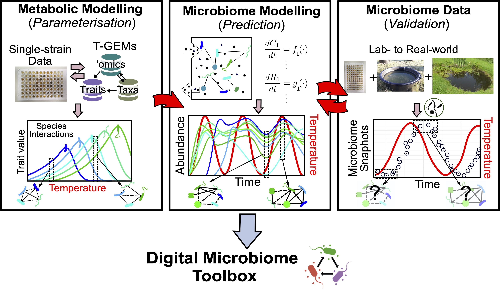

About#
Digital Microbiome#
DigiMic (Digital Microbiome) is an open modelling framework for predicting how microbial communities assemble, respond to environmental change, and process carbon. The current Python package, DigiMicPy, starts from the Microbial Consumer-Resource Model (MiCRM): species consume resources, leak metabolic by-products, compete through shared demand, and facilitate one another through cross-feeding.
The longer-term Digital Microbiome goal is to connect three layers in a single transparent workflow:
Metabolic modelling and parameterisation from strain-level data, traits, taxa, and omics.
Microbiome modelling and prediction with MiCRM, effective GLV reductions, stability analysis, coalescence experiments, carbon use efficiency, and temperature-dependent traits.
Microbiome data and validation against lab and real-world freshwater microbiome observations, including community composition, abundance, resource chemistry, carbon fluxes, and responses to fluctuating temperature, nutrient, and chemical regimes.
{kind=link}

Fig. 1 Digital Microbiome workflow: strain-level traits and metabolic modelling parameterise predictive microbiome dynamics, which are then compared with lab and field data.#
What DigiMic helps you study#
DigiMic is intended for exploratory and mechanistic microbiome modelling, especially when the question depends on how species transform shared resources rather than on species interactions alone. Typical uses include:
generating synthetic microbial communities with modular resource preferences;
simulating consumer and resource trajectories through time;
comparing communities under different leakage, supply, mortality, or resource-loss regimes;
studying cross-feeding and metabolic by-product structure;
reducing MiCRM dynamics to effective species interactions for interpretation;
analysing local stability, reactivity, feasibility, and return rates around equilibria;
simulating community coalescence by merging pre-assembled microbiomes;
calculating species-level and community-level carbon use efficiency (CUE);
adding temperature-dependent uptake, maintenance, leakage, or resource-supply traits.
Model overview#
The core state variables are consumer biomasses \(C_i\) and resource abundances \(R_\alpha\). Each consumer takes up resources according to an uptake matrix \(u_{i\alpha}\), converts part of the uptake into growth, and leaks the rest into other resources through a leakage tensor \(l_{i\alpha\beta}\). Resources also enter and leave the environment through supply and decay terms.
DigiMic therefore keeps both sides of microbiome dynamics visible:
Layer |
What it represents |
Examples in the code |
|---|---|---|
Consumers |
Microbial populations or strains |
\(N\), \(C_i\), \(m_i\) |
Resources |
Metabolites, nutrients, or abstract resource classes |
\(M\), \(R_\alpha\), \(\rho_\alpha\), \(\omega_\alpha\) |
Uptake |
Consumer-resource preferences |
|
Leakage |
Metabolic by-products and cross-feeding |
|
Dynamics |
Coupled ODEs for consumers and resources |
|
Analysis |
Reduced interactions and stability metrics |
effective GLV, Jacobian eigenvalues, feasibility |
Function |
Carbon processing and efficiency |
species CUE, community CUE, resource fluxes |
Current implementation#
The current Python version contains:
src/param.py: utilities for modular uptake matrices and leakage tensors;src/micrm.py: a complete minimal MiCRM simulation script;docs/content/*.ipynb: executable documentation pages used to generate this website;docs/content/*.md: theory and usage notes for extensions that are being added to the package;docs/content/figures/: conceptual figures for the modelling framework and workflow.
The documentation is organised into basic theory, technical details, a runnable basic usage example, advanced usage notes, analysis pages, support information, and contact details.